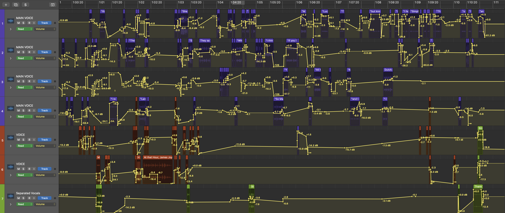
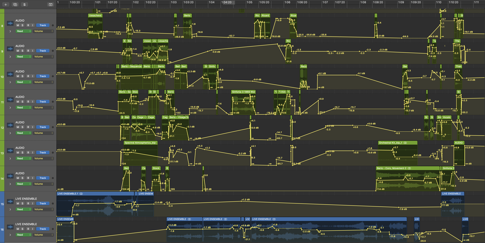

An experimental classical piece exploring the interaction between acoustic and electronic media, written to as a homage to the life of Italian contemporary composer Luciano Berio. Composed Spring 2025.
Luciano Berio’s music is hard to categorise. He interacted with much of the post-war avant-garde—the serial music of Dallapicolla; Boulez and Stockhausen at the Darmstadt school; the electroacoustic innovations he encountered in visits to the USA; and the indeterminacy of Cage and Ives. His inspirations also lay beyond music—in the modernist literature of Joyce and Beckett, philosophy of Ernst Bloch, structuralist anthropology of Lévi-Strauss, and the works of Italian intellectual figures such as Umberto Eco and Edoardo Sanguineti. Above all, Berio was captivated by the human voice. His lifelong exploration of its expressive potential—sparked by his collaboration with his first wife Cathy Berberian—runs as a connecting thread through early works like Sequenza III and Omaggio a Joyce, to later large-scale choral and operatic works.
The concept and structure of this piece is inspired by the third movement of Berio’s 1968 masterpiece Sinfonia, which he described as unfolding along two narratives: the Scherzo from Mahler’s Second Symphony and a continuous solo tenor voice. From this framework emerges a dense web of musical, literary, and historical allusions.
This piece centres on a continuous vocal stream which consists of archival recordings of Berio, voices from his personal or artistic circle such as Berberian, Eco, Chailly, Lévi-Strauss, Stravinsky, excerpts from his vocal works, readings of Joyce, and recordings from historical events such as the May ’68 protests and Mussolini’s speeches. The voices often overlap and interweave, shifting in intelligibility, as a nod to the stream-of-consciousness modernist writing that Sinfonia seems to musically depict.
The accompanying music, like in Sinfonia, forms a collage of quotations which interact and respond to what the voices are saying. It draws on works by composers including Dallapiccola, Stockhausen, Mahler, Stravinsky, Berg, Cage, Schubert, and Berio himself. The piece is then split into six sections, each depicting a different period in Berio’s creative development.
Berio saw creativity as a process of transcription—a musical work was never truly finished, always open to reinterpretation through not only further performances but also further compositions. Thus, he often reworked his own music, seen in his Chemins series. In Rendering, a “restoration” of Schubert’s unfinished Tenth Symphony, Berio fills the empty spaces between the sketches with a distant, alien soundworld that intermingles with Schubert’s music, which, in a tratteggio-like fashion, embraces rather than hides the damage which time has done. His use of quotation in Sinfonia, then, similarly rejects the modernist search for a new, cohesive language free from the musical traditions of the past, embracing instead the fragmented and pluralist aesthetic of a newly emerging postmodernism.
In 1972, Berio returned from the USA to an Italy ravaged by the political and social turmoil of the so-called ‘Years of Lead’ (1968-88). Two years later, he began composing Coro, a complex exploration of the relationship between voice and instrument, text and music, using a multilingual patchwork of folk songs from across the world. Yet, as a tribute to the tragedy that was unfolding in his country, the piece is also fiercely passionate and humane, with its haunting line from Pablo Neruda, “Come and see the blood in the streets.” In some ways, Coro encapsulates the essence of Berio’s music—as multilayered as the human experience, and intrinsically connected to both itself and to the vast network of history that he was so acutely aware of. Music, for Berio, was a living, evolving dialogue, carrying with it both the reverberations of the past and implications for the future. This piece is dedicated to a composer who left behind perhaps the most interconnected body of music ever written.
Technology used:
I used Logic Pro X to essentially create the entire soundtrack: I cut, cleaned and rearranged the vocal excerpts and recordings using it and layered them along with a playback of the instrumental score from Musescore to create the final recording of what the piece would sound like. In a real performance of the piece, only the electronic track would be played alongside the six acoustic instruments played live.
These are some screenshots inside the Logic Pro X software showcasing the volume, reverb and panning adjustments I made to each electronic track to balance out the overall sound.


Here is the final recording of the piece, created and compiled on Logic Pro X.